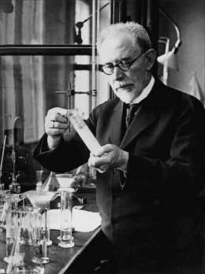

PhD encounters · interactive models
The pH scale


In 1909 Søren Sørensen was head of chemistry at the Carlsberg Laboratory in Copenhagen, the research institute founded by the brewery in 1875. He was studying how acidity changes the way enzymes work, and he kept having to write numbers like 0.0000001 for the concentration of hydrogen ions. His fix was to write down only the exponent, with the sign flipped:
pH = −log10 [H⁺][H⁺] is the concentration of hydrogen ions, in mol per litre
So 0.0000001 mol/L becomes pH 7, and each step down the scale means ten times more hydrogen ions. Leonor Michaelis took the idea up early: his 1913 experiments with Maud Menten on enzyme rates depended on holding the pH still. In a fermentation it is the number that decides which microbes grow and how fast their enzymes work. Below you can make a solution and read its pH.
The scale. The marker is your solution. Below 7 is acidic, above 7 is basic.
pH against the amount dissolved. Vertical: pH. Horizontal: concentration in mol/L. Each step to the right is ten times more.
What the values mean
- [H⁺] · hydrogen ions
- How many hydrogen ions are loose in the water, in mol per litre. This is what makes a solution acidic. In pure water at 25 °C it is 0.0000001 mol/L.
- pH
- The exponent of that number with the sign flipped. Seven is neutral. One unit lower means ten times more hydrogen ions, one unit higher means ten times fewer. Sørensen wrote it pH. What the p stands for is still argued about, and “power” (Potenz in German) is the usual reading.
- Amount dissolved
- The concentration of the acid or base you add, in mol per litre. The slider moves in powers of ten, from 0.00001 to 1 mol/L.
- Strong acid
- An acid that splits completely in water, so every molecule gives up its hydrogen ion. Hydrochloric acid is the standard example.
- Lactic and acetic acid
- The acids of sour milk and of vinegar, and the two main acids of many ferments. Both are weak: only part of the molecules split, and the rest stay whole. Lactic acid has a pKa of 3.86 and acetic acid 4.76.
- pKa
- The pH at which exactly half of a weak acid is split into ions. The lower the pKa, the stronger the acid.
- Strong base
- Sodium hydroxide releases hydroxide ions, which remove hydrogen ions from the water. The curve is the mirror image of the strong acid.
- Split into ions
- The share of the dissolved molecules that have given up their hydrogen ion. Always 100% for the strong acid and the strong base.
- Weight dissolved
- The same concentration in grams per litre, which is how you would weigh it out.
- Everyday comparison
- The closest entry in the table below.
- Bottom chart
- The pH for every concentration of the chosen substance. A strong acid draws a straight line: ten times more acid, one pH unit less. A weak acid draws a shallower line.
| Typical pH | Where you find it |
|---|---|
| 2.3 | Lemon juice |
| 2.5 | Vinegar |
| 3.0 | Kombucha |
| 3.4 | Wine |
| 4.3 | Beer |
| 5.0 | Black coffee |
| 6.6 | Milk |
| 7.0 | Pure water at 25 °C |
| 8.1 | Sea water |
| 11.5 | Household ammonia |
| 12.5 | Bleach |
| Try this | What it shows |
|---|---|
| Strong acid, 0.001 → 0.01 | Ten times more acid and the pH drops by exactly one unit, from 3 to 2. That is all a logarithm does. |
| Acetic acid, 0.001 → 0.01 | The pH drops by only about half a unit. Most of the extra acid stays whole. |
| Lactic, then acetic, at 0.1 | Same amount, different pH: about 2.4 against 2.9. Lactic acid is the stronger of the two. It gives up its hydrogen ion about eight times more readily. |
| Acetic acid at 50 g/L | The strength of kitchen vinegar. The model lands close to the 2.5 in the table. |
| Any weak acid, far left | The more you dilute a weak acid, the larger the share that splits into ions. |
Source: S. P. L. Sørensen, “Enzymstudien. II. Über die Messung und die Bedeutung der Wasserstoffionenkonzentration bei enzymatischen Prozessen”, Biochemische Zeitschrift 21, 131–304 (1909). The calculation treats concentration as activity, uses 25 °C, and for the weak acids ignores the hydrogen ions that water supplies on its own, which is safe at these concentrations. The values in the table are typical and real samples vary. The code in this repository was generated with Claude (Anthropic).